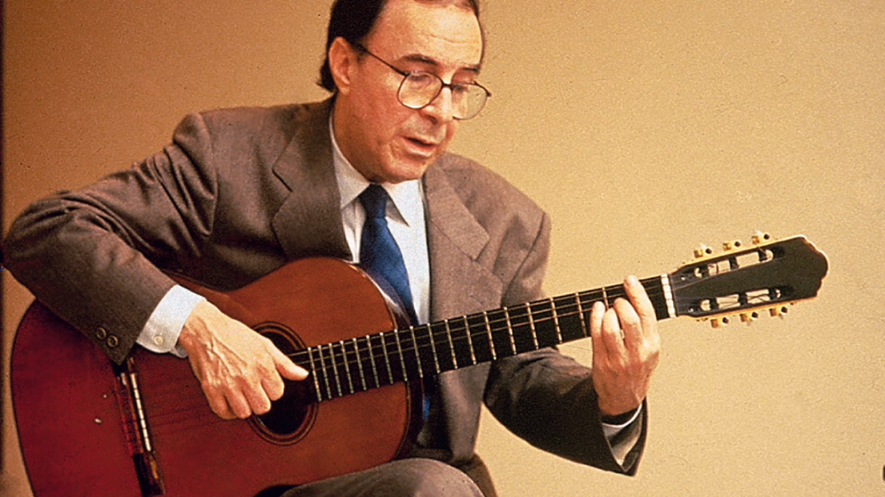
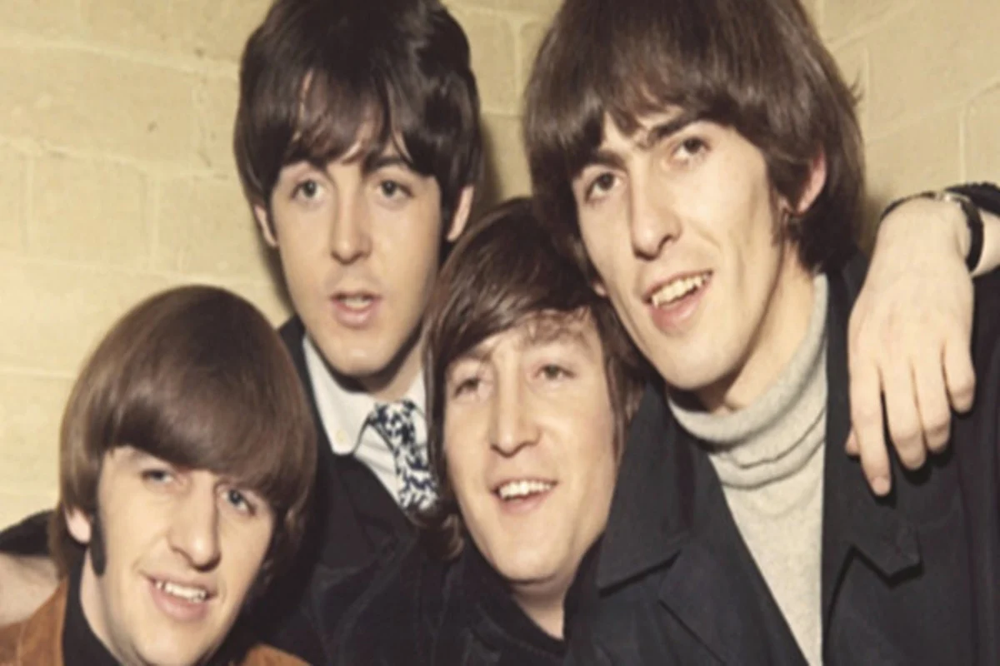

Caetano Veloso
Em 1967, auge do Tropicalismo, Caetano Veloso lançou uma música chamada “Alegria, Alegria” que
tinha como objetivo driblar a censura implantada pela ditadura militar com uma letra sobre
liberdade, no momento em que grande parte da classe artística se sentia aprisionada. Mesmo após as
críticas que surgiram em cima da melodia, essa música foi classificada como quarto lugar no III Festival
de
MPB da TV Record.

Gal Costa
Foi uma compositora, cantora e multi-instrumentista brasileira. Considerada por alguns a cantora mais
plural do Brasil e do mundo, Gal transitou em todos os gêneros musicais além de ser cantora brasileira
mais
bem colocada na lista de 200 maiores cantores(as) de todos os tempos pela revista Rolling Stone,
foi eleita, pela revista Time, como uma das 10 maiores cantoras de todo mundo.

João Gilberto
Musicólogo e jornalista especializado, revolucionou a música
brasileira ao criar uma nova batida de violão para tocar samba: a "bossa nova". O seu jeito suave de
cantar também influenciou muitos cantores da nova geração. Para a revista Rolling Stone Brasil, joao
Gilberto
é um dos 30 maiores ícones brasileiros da guitarra e do violão,além de ser o segundo maior artista
brasileiro
de todos os tempos, seguindo Tom Jobim

the beatles
The Beatles, uma banda de rock britânica formada em 1960 na cidade de Liverpool. Formada por Paul
McCartney, John
Lennon, Ringo Star e George Harrison, é considerada a banda mais influente de todos os
tempos. Enraizados do rock and roll, skiffle e beat da década de 1950, seu
som incorporava elementos da música clássica e pop tradicional de maneiras inovadoras; a banda mais
tarde explorou estilos musicais que variavam de baladas e música indiana a psicodelia e hard rock.
Tom Jobim
Tom Jobim foi um compositor, pianista, cantor e arranjador brasileiro considerado um dos maiores
expoentes da música popular brasileira e um dos criadores da bossa nova. Ele nasceu em 1927, no bairro
da Tijuca, no Rio de Janeiro, e começou a tocar piano desde criança.
Jobim se destacou por suas composições que misturavam elementos da música brasileira com o jazz e a
música clássica, criando um estilo próprio que influenciou muitos músicos ao redor do mundo.

Michael Jackson
Nascido no dia 29 de agosto de 1958, na cidade de Gary, nos Estados Unidos, Michael Joseph Jackson filho Joe e Katherine Jackson. O talento de Jackson foi descoberto por seus pais após verem o filho cantar no chuveiro aos cinco anos de idade.
Michael deu início em sua carreira no ano de 1971, na Motown Records, após nove anos (1980) ele se tornou uma figura predominante na música popular.
No ano de 1982, lançou o álbum Thriller, que se transformou no álbum mais vendido da história da música.
Aos 50 anos de idade o astro da música pop deixa familiares e fãs após uma parada cardíaca no ano de 2009.


Achei muito interessante.
_barbizinha30_
Um cara qualquer